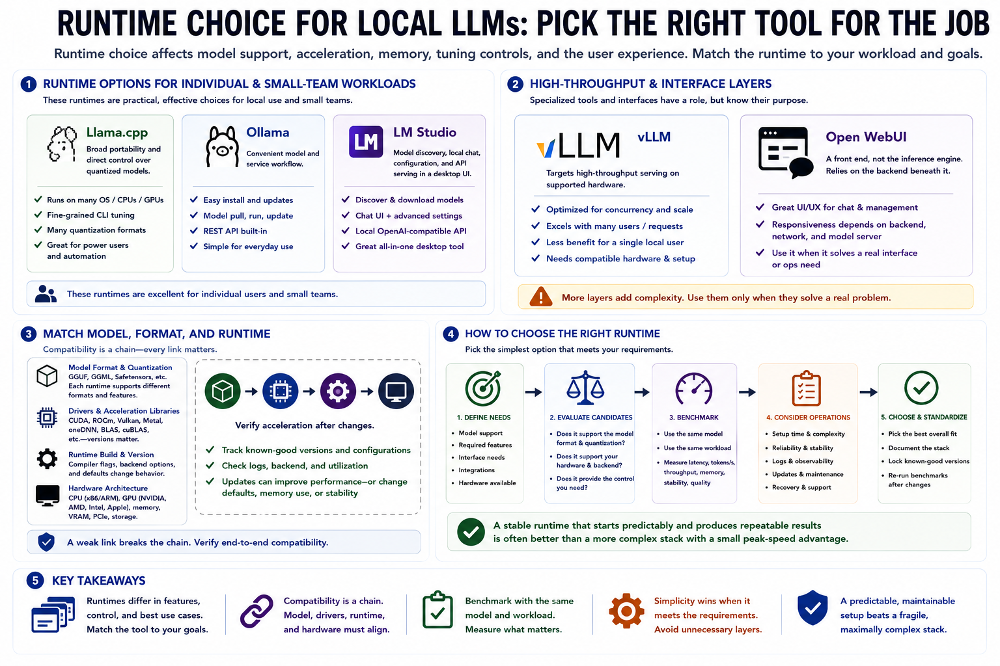

Runtime and Software Choices
Connecting to LMS... Progress: in progress

Narration
Runtime choice affects supported model formats, acceleration backends, memory management, and tuning controls. Llama.cpp offers broad portability and direct control over quantized models. Ollama provides a convenient model and service workflow. LM Studio combines model discovery, local chat, configuration, and API serving in a desktop interface. These options are effective for individual and small-team workloads.
VLLM targets high-throughput serving on supported hardware and can benefit concurrent workloads, but its strengths may not matter for one local interactive user. Open WebUI is a front end rather than the inference engine; its responsiveness depends on the backend, network path, and model server beneath it. Additional layers are worthwhile only when they solve a real interface or operations requirement.
Match the model format and quantization to the runtime. A model optimized for one loader may be unsupported or inefficient in another. Driver versions, acceleration libraries, runtime builds, and hardware architecture form a compatibility chain. Track known-good versions and verify acceleration after changes. Newer software may improve performance, but it may also change defaults, memory use, or stability.
Choose the simplest runtime that provides the required model support, control, and interface. Benchmark candidates with the same model and workload, then include setup time, reliability, logs, updates, and recovery in the decision. A stable runtime that starts predictably and produces repeatable results is often better than a more complex stack with a small peak-speed advantage.